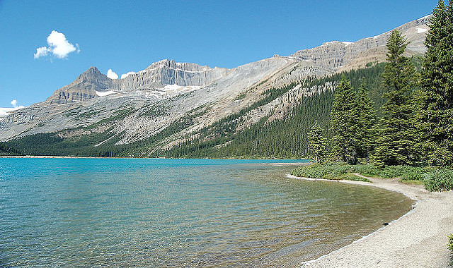

The largest city in Saskatchewan is Saskatoon,Saskatchewan while the capital city in Saskatchewan is Regina,Saskatchewan. First, Saskatoon is the city that has the largest population in Saskatchewan and is the 17th largest metropolitan area in Canada. Saskatoon is located in the middle-southern portion of Saskatchewan and its current mayor is Charlie Clark. Second, Regina is the city that has the second largest population in Saskatchewan and is the 18th largest metropolitan area in Saskatchwean behind Saskatoon. Regina is located in the Southern portion of Saskatchewan, east of Moose Jaw. Regina's current mayor is Michael Fougere. Saskatoon's tourist attractions include the Mendel Art Gallery, the Ukrainian Museum of Canada, and the Remai Modern while Regina's tourist attractions include the Royal Saskatchewan Museum, Saskatchewan Science Centre, and the Royal Canadian Mounted Police (RCMP) Heritage Centre.


The professional sports teams in Saskatchewan include the Saskatchewan Roughriders of the Canadian Football league (CFL).
Here are some of the symbols that help make Saskatchewan a very unique and special place:
| Name | Symbols |
|---|---|
| Tree | Paper Birch |
| Animal | White-tailed deer |
| Flower | Western Red Lily |
| Sport | Curling |
| Bird | Sharp-tailed Grouse |
| Mineral | Potash | Motto | Multis E Gentibus Vires (From many peoples' strength) |

1. Regina, Saskatchwan has the world's biggest bridge over a short length of water.
2. Curling is Regina's official sport in 2001.
3. Mustard from Saskatchewan is used for 75% of production in Canada.
4. Lake Athabaska is the largest lake in Saskatchewan.
5. Saskatchewan is one of the biggest producers of the mineral Potash.
Look at the inline frame below to see the tourist website of Saskatchewan
Back to home page